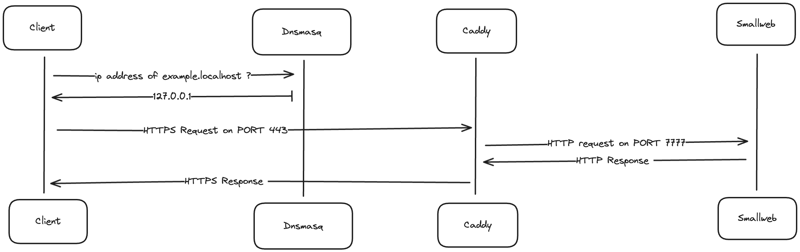

Getting started
Why Smallweb ?
See https://smallweb.run for a quick overview of the project.
Installation
Smallweb installations steps heavily depends on the experience you want to have with Smallweb. Here are a few options:
- Localhost Setup - Easiest way to get started, no need for a dedicated server or a domain name. Work on MacOS and Linux.
- Home Server Setup - Host you apps on your home server, and expose them to the internet using Cloudflare Tunnel. Requires a domain name.
- VPS Setup - Similar to the Home Server setup, but using a VPS Provider instead. Shows you how to setup a fresh Debian 12 VPS to host your smallweb apps.
Usage
Follow the Routing guide to learn more about the smallweb folder structure, and create your first app.
Routing
Smallweb maps domains to folders. By default, it will maps *.localhost to ~/localhost/*, but you can add more hostnames from the config (~/.config/smallweb/config.json[c]).
Mapping a single domain to a folder
{
"domains": {
"example.com": "~/example.com"
}
}
Mapping a wildcard domain to a single folder
{
"domains": {
"*.example.com": "~/example.com",
}
}
Mapping a wildcard domain to multiple folders
{
"domains": {
"*.example.com": "~/example.com/*"
}
}
Static
Static Assets
The simplest smallweb app you can create is just a folder with a text file in it.
mkdir -p ~/localhost/example-website
echo "Hello, world!" > ~/localhost/example-website/hello.txt
If you open https://hello-world.localhost/hello.txt in your browser, you should see the content of the file.
Static Websites
If the folder contains an index.html file, it will be served as the root of the website.
<!-- File: ~/localhost/example-website/index.html -->
<!DOCTYPE html>
<html lang="en">
<head>
<meta charset="UTF-8">
<meta name="viewport" content="width=device-width, initial-scale=1.0">
<title>Smallweb - Host websites from your internet folder</title>
<link href="https://cdnjs.cloudflare.com/ajax/libs/tailwindcss/2.2.19/tailwind.min.css" rel="stylesheet">
</head>
<body class="bg-white flex items-center justify-center min-h-screen text-black">
<div class="border-4 border-black p-10 text-center">
<h1 class="text-6xl font-extrabold mb-4">Smallweb</h1>
<p class="text-2xl mb-6">Host websites from your internet folder</p>
</div>
</body>
</html>
If you open https://example-website.localhost in your browser, you should see the content of the index.html file.
Static Site Generation
In order to integrate with SSG tools like Astro, Hugo or Lume, smallweb automatically serves the content of the dist folder if it contains an index.html file.
If you static site generator does not use the dist folder, you can either configure it to do so, or create a smallweb.json file at the root of your project to specify the folder to serve.
{
"serve": "public"
}
Vite projects are also supported out of the box.
cd ~/localhost
npm create vite@latest
Dynamic Websites
Smallweb can also host dynamic websites. To create a dynamic website, you need to create a folder with a main.[js,ts,jsx,tsx] file in it.
The file should export a default object with a fetch method that takes a Request object as argument, and returns a Response object.
// File: ~/localhost/example-server/main.ts
export default {
fetch(request: Request) {
const url = new URL(request.url);
const name = url.searchParams.get("name") || "world";
return new Response(`Hello, ${name}!`, {
headers: {
"Content-Type": "text/plain",
},
});
},
}
To access the server, open https://example-server.localhost in your browser.
Using JSX
You can use the @jsxImportSource pragma to define the source of the jsx factory function. This allows you to use jsx in your server code.
// File: ~/localhost/jsx-example/main.tsx
/** @jsxImportSource npm:@preact **/
import render from "npm:preact-render-to-string";
const handler = () => new Response(render(<h1>Hello, world!</h1>), {
headers: {
"Content-Type": "text/html",
},
});
export default { fetch: handler };
To access the server, open https://jsx-example.localhost in your browser.
Routing Requests using Hono
Smallweb use the deno runtime to evaluate the server code. You get typescript and jsx support out of the box, and you can import any module from the npm and jsr registry by prefixing the module name with npm: or jsr:.
As an example, the following code snippet use the @hono/hono extract params from the request url.
// File: ~/localhost/hono-example/main.ts
import { Hono } from "jsr:@hono/hono";
const app = new Hono();
app.get("/", c => c.text("Hello, world!"));
app.get("/:name", c => c.text(`Hello, ${c.params.name}!`));
export default app;
To access the server, open https://hono-example.localhost in your browser.
Setting env variables
You can set environment variables for your app by creating a file called .env in the application folder.
Here is an example of a .env file:
BEARER_TOKEN=SECURE_TOKEN
Use the Deno.env.get method to access the environment variables in your app:
// File: ~/localhost/demo/main.ts
export default function (req: Request) {
if (req.headers.get("Authorization") !== `Bearer ${Deno.env.get("BEARER_TOKEN")}`) {
return new Response("Unauthorized", { status: 401 });
}
return new Response(`I'm private!`, {
headers: {
"Content-Type": "text/plain",
},
});
}
If you want to set an environment variable for all your apps, you can use the env property from the smallweb global config (~/.config/smallweb/config.json[c]).
Configuring permissions
By default, a smallweb app can:
- read and write the current directory
- access environment variables using
Deno.env.get - access the network with
fetch
If you want to add more permissions to your app (or restrict it even further), you can either:
- add
smallweb.jsonconfiguration file at the root of the folder - add a
smallwebfield in yourdeno.json
A json schema for the config file is available here. See the deno docs to learn the available permissions.
Here is the default config when no smallweb.json file is present:
{
"$schema": "https://schema.smallweb.run",
"permissions": {
"env": true,
"net": true,
"read": ["."],
"write": {
"allow": ["."],
"deny": [ "smallweb.json", "smallweb.jsonc", "deno.json", "deno.jsonc"]
}
}
}
If you want to add permissions to run a binary, you should start from it, then add the required permissions:
{
"$schema": "https://schema.smallweb.run",
"permissions": {
"env": true,
"net": true,
"read": ["."],
"write": {
"allow": ["."],
"deny": [ "smallweb.json", "smallweb.jsonc", "deno.json", "deno.jsonc"]
},
"run": ["/opt/homebrew/bin/gh"],
}
}
As a general rule, you should only add permissions that are required for your app to run. The more permissions you add, the more attack surface you expose to potential attackers. If you know what you are doing (or just don't care), you can allow all permissions by setting the all field to true.
{
"$schema": "https://schema.smallweb.run",
"permissions": {
"all": true
}
}
Cron Jobs
You can register configure cron tasks from your smallweb.json[c] or the smallweb field from your deno.json[c].
{
"crons": [
{
"name": "refresh-cache",
"schedule": "0 0 * * *",
"command": "./refresh-cache.ts",
"args": []
}
]
}
The schedule field is a cron expression that defines when the task should run. It follows the standard cron syntax, with five fields separated by spaces. You can also use the following shortcuts:
@hourly: Run once an hour, at the beginning of the hour.@daily: Run once a day, at midnight.@weekly: Run once a week, at midnight on Sunday.@monthly: Run once a month, at midnight on the first day of the month.@yearly: Run once a year, at midnight on January 1st.
Cron tasks can be defined in any language, as long as the file is executable and has the appropriate shebang line. You'll probably want to use deno as the runtime, more information on how to do that can be found in the deno docs.
You can trigger a cron task manually by running the following command:
smallweb cron trigger <cron>
If you're not in the app directory, you can specify the app name with the --app flag:
smallweb cron trigger --app <app> <cron>
If you want to see a list of all cron tasks, you can run:
smallweb cron list
If you're not in the app directory, you can specify the app name with the --app flag, or use the --all flag to list all cron tasks:
# list all cron tasks
smallweb cron list --all
# list all cron tasks for a specific domain
smallweb cron list --domain <domain>
# list all cron tasks for a specific app
smallweb cron list --app <app>
Templates
Smallweb comes with a list of templates to help you get started with your project. You can use the smallweb init command to create a new project from a template.
# Interactive mode
smallweb init
# Init a project from a template
smallweb init ~/localhost/hono-app --template hono
In addition to this, smallweb is compatible with most static sites generator, so you can use your favorite generator to create your project.
Ex: npm create vite@latest ~/localhost/my-vite-app
Depending on the framework you choose, you might need to either:
- Setup your build process to output files in a
distfolder (smallweb will serve the content of this by default). - Add a
smallweb.jsonfile to the root of your project to specify the folder to serve using theservefield.
Smallweb Plugins
The smallweb CLI can be extennded with plugins. To create a new plugin, just add a binary to your PATH that starts with smallweb- and the CLI will automatically detect it.
For example, if you create a new smallweb-choose file in your PATH with the following content:
#!/bin/sh
# List all apps, pipe to fzf, and open the selected app
# see https://junegunn.github.io/fzf/installation/ for fzf installation instructions
smallweb ls | fzf --with-nth=1 | cut -f2 | xargs smallweb open
And make it executable with chmod +x smallweb-choose, you will be able to run smallweb choose and get an interactive list of your apps to choose from, which will then be opened in your default browser.
Example Plugins
simpl-site can be installed as a smallweb plugin. You can install it using the following command:
deno install -Agf jsr:@iamseeley/simpl-site/smallweb-simpl-site
You will then be able to run smallweb simpl-site to create a new static site.
Tooling
Smallweb is not tied to any specific tooling, but here are some tools that I use to develop and deploy my smallweb apps.
Cloudflare Tunnel
I use Cloudflare Tunnel to expose my smallweb instances to the internet. It gives me a bunch of features for free:
- DDoS protection
- CDN caching
- Access control (using Cloudflare Access)
- Analytics
- And a bunch more (that I don't know objet)
I evaluated a bunch of tunneling solutions (and even started building my own), but the set of features that Cloudflare provides for free is hard to beat.
Mutagen
Mutagen is an excellent 2-way file synchronization tool that can keep your local and remote files in sync. It's a great way to develop your smallweb apps locally and deploy them to your server.
Here is how I sync the smallweb.run folders between my VPS and my macbook:
mutagen sync create --name=smallweb-run ~/smallweb.run vps:/home/smallweb/smallweb/smallweb.run
VS Code Remote - SSH
When I want to debug my smallweb apps running on the VPS, I use VS Code Remote - SSH. It allows me to connect to my VPS and run the VS Code debugger on the remote machine.
Tailscale
I use Tailscale to connect all my devices, including my VPS. It allows me to access my smallweb instances from anywhere, as if they were on my local network.
La Terminal
To edit websites from an ipad or iphone, I recommend using La Terminal. It's the best free option available.
If you're ok with paying a yearly fee for a better experience, I recommend using Blink Shell.
Termux
On android, there is no better option than Termux. It's a full-featured terminal emulator that allows me to connect to my VPS and run smallweb apps from my phone.
This page will guide you through the process of setting up your local environment for smallweb on MacOS.
This setup is useful for developing and testing smallweb apps locally, without having to deploy them to the internet.
If you want to expose your apps to the internet instead, you can follow the Cloudflare Tunnel setup guide.
Architecture
The following diagram illustrates the architecture of the local setup:

The components needed are:
- a dns server to map
*.localhostdomains to127.0.0.1ip address (dnsmasq) - a reverse proxy to automatically generate https certificates for each domain, and redirect traffic to the smallweb evaluation server (caddy)
- a service to map each domain to the corresponding folder in ~/localhost, and spawn a deno subprocess for each request (smallweb)
MacOS setup
In the future, we might provide a script to automate this process, but for now, it's a manual process.
Install Brew
# install homebrew (if not already installed)
/bin/bash -c "$(curl -fsSL https://raw.githubusercontent.com/Homebrew/install/HEAD/install.sh)"
Install Deno
brew install deno
Setup Smallweb
brew install pomdtr/tap/smallweb
smallweb service install
Setup Caddy
brew install caddy
# Write caddy configuration
cat <<EOF > /opt/homebrew/etc/Caddyfile
*.localhost {
tls internal {
on_demand
}
reverse_proxy localhost:7777
}
EOF
# Run caddy in the background
brew services start caddy
# Add caddy https certificates to your keychain
caddy trust
Setup dnsmasq
brew install dnsmasq
# Write dnsmasq configuration
echo "address=/.localhost/127.0.0.1" >> /opt/homebrew/etc/dnsmasq.conf
# Run dnsmasq in the background
sudo brew services start dnsmasq
# Indicates to the system to use dnsmasq for .localhost domains
sudo mkdir -p /etc/resolver
cat <<EOF | sudo tee -a /etc/resolver/localhost
nameserver 127.0.0.1
EOF
Testing the setup
First, let's create a dummy smallweb website:
mkdir -p ~/localhost/example
CAT <<EOF > ~/localhost/example/main.ts
export default {
fetch() {
return new Response("Smallweb is running", {
headers: {
"Content-Type": "text/plain",
},
});
}
}
EOF
If everything went well, you should be able to access https://example.localhost in your browser, and see the message Smallweb is running.
Ubuntu / Debian setup
Install Deno
curl -fsSL https://deno.land/install.sh | sh
# add ~/.deno/bin to PATH
echo "export PATH=\$PATH:\$HOME/.deno/bin" >> ~/.bashrc
Setup Smallweb
curl -FsSL https://install.smallweb.run | sh
# add ~/.local/bin to PATH
echo "export PATH=\$PATH:\$HOME/.local/bin" >> ~/.bashrc
smallweb service install
Setup Caddy
sudo apt install -y caddy
# Write caddy configuration
cat <<EOF > /etc/caddy/Caddyfile
*.localhost {
tls internal {
on_demand
}
reverse_proxy localhost:7777
}
EOF
sudo systemctl restart caddy
caddy trust
There is no need to setup dnsmasq on Ubuntu, as it seems to be already configured to resolve .localhost domains to 127.0.0.1.
Testing the setup
First, let's create a dummy smallweb website:
mkdir -p ~/localhost/example
CAT <<EOF > ~/localhost/example/main.ts
export default {
fetch() {
return new Response("Smallweb is running", {
headers: {
"Content-Type": "text/plain",
},
});
}
}
EOF
If everything went well, you should be able to access https://example.localhost in your browser, and see the message Smallweb is running.
Cloudflare Tunnel is a free service that allows you to expose your local server to the internet, without having to expose your local IP address.
Additionally, it provides some protection against DDoS attacks, and allows you to use Cloudflare's other services like Access.
Setup
-
Make sure that you have a domain name that you can manage with Cloudflare.
-
Install smallweb on your server, and register it as a service.
// install deno curl -fsSL https://deno.land/install.sh | sh // install smallweb curl -sSfL https://install.smallweb.run | sh // register smallweb as a service smallweb service install // make sure that the server service is running smallweb service status -
From your cloudflare dashboard, navigate to
Zero Trust > Networks > Tunnels -
Click on
Create a tunnel, and select theClouflaredoption -
Follow the intructions to install cloudflared, and create a connector on your device.
-
Add a wildcard hostname for your tunnel (ex:
*.<your-domain>), and usehttp://localhost:7777as the origin service. -
Do the same for your apex domain, if you want to manage it using smallweb.
-
Copy the tunnel ID, and go to
Websites > DNS > Records. -
Add a new
CNAMErecord for your wildcard hostname, with a target of<tunnel-id>.cfargotunnel.com.
Checking that your tunnel is running
Create a dummy smallweb app in ~/localhost/example
mkdir -p ~/localhost/example
CAT <<EOF > ~/localhost/example/main.ts
export default {
fetch() {
return new Response("Smallweb is running", {
headers: {
"Content-Type": "text/plain",
},
});
}
}
EOF
If everything went well, you should be able to access https://example.<your-domain> in your browser, and see the message Smallweb is running.
Optional Steps
- You can protect your tunnel (or specific apps) with Cloudflare Access.
VPS Setup
If you're using a Debian-based VM, you can follow these steps to setup smallweb, assuming you're logged in as root.
These steps will also work on other distributions, but you may need to adjust the package manager commands.
# create user with homedir and default shell
useradd -m -s $(which bash) smallweb
# fix home directory permissions
chown smallweb:smallweb /home/smallweb
# set a password for the smallweb user
passwd smallweb
# give the user sudo access
usermod -aG sudo smallweb
# allow the user to use systemd
usermod -aG systemd-journal smallweb
# run user services on login
loginctl enable-linger smallweb
At this point, you can switch to the smallweb user (ex: using ssh smallweb@<ip>) and install smallweb:
# install unzip (required for deno)
sudo apt update && sudo apt install unzip
# install deno
curl -fsSL https://deno.land/install.sh | sh # install deno
# install smallweb
curl -sSfL https://install.smallweb.run | sh # install smallweb
# start the smallweb service
smallweb service install
To make your service accessible from the internet, you have multiple options:
- setup a reverse proxy on port 443 (ex: caddy)
- using cloudflare tunnel (see cloudflare setup)
Hosting on fly.io
A template repository to host your smallweb app on fly.io is available at pomdtr/smallweb-fly.
Deno Deploy
If one of your websites is starting to get a lot of traffic, you might want to deploy it to a cloud provider.
Deno Deploy is a cloud platform that allows you to deploy your Deno apps with ease. It's a great choice for smallweb apps, since it's built on top of Deno, and it's very easy to use.
To deploy an app, you'll just need to:
-
Install the
deployctlcli:deno install -Arf jsr:@deno/deployctl -
Run
deployctl deploy, and follow the instructions.
Beware, all Deno APIs are not available in Deno Deploy. For example, you won't be able to write files to the filesystem.
Global Config
The smallweb config is located at ~/.config/smallweb/config.json[c]. It is a json file that defines global settings for smallweb.
You can also specify a custom config file by setting the SMALLWEB_CONFIG environment variable.
Smallweb also respects the XDG_CONFIG_HOME environment variable.
host
The host field defines the host to bind to. By default, it is 127.0.0.1.
{
"host": "0.0.0.0"
}
port
The port field defines the port to bind to. By default, it is 7777.
{
"port": 8000
}
domains
The domains field defines a list of domains to folders. By default, it maps *.localhost to ~/localhost/*, but you can add more hostnames from the config.
{
"domains": {
"example.com": "~/example.com"
}
}
See the Routing guide for more information.
env
The env field defines a list of environment variables to set for all apps.
{
"env": {
"NODE_ENV": "production"
}
}
Configuration Reference
The smallweb configuration can be defined in a smallweb.json[c] file at the root of the project, or in the smallweb field of the deno.json[c] file. This config file is optional, and sensible defaults are used when it is not present.
A json schema for the config file is available here.
You can set it using a $schema field in your smallweb.json[c] file:
{
"$schema": "https://schema.smallweb.run",
"serve": "./build"
}
VS Code Users can also set it globally in their settings.json:
{
"json.schemas": [
{
"url": "https://schema.smallweb.run",
"fileMatch": [
"smallweb.json",
"smallweb.jsonc"
]
}
]
}
serve
The serve field defines the file / directory to serve. If this field is not provided, the following defaults are used:
- if a
main.[js,jsx,ts,tsx]file exists in the root directory, it is served - if a
distdirectory exists and contains anindex.htmlfile, it is served - the root directory is served
Examples
-
Serve a file
{ "serve": "./serve.js" } -
Statically serve a directory
{ "serve": "./build" }
crons
The crons field defines a list of cron jobs to run. See the Cron Jobs guide for more information.
{
"crons": [
{
"name": "example",
"schedule": "0 0 * * *",
"command": "./sync-db.ts",
}
]
}
permissions
The permissions field defines a list of permissions to grant to the Deno process. See the Permissions guide for more information.
Examples
-
Giving all permissions
{ "permissions": { "all": true } } -
Giving specific permissions
{ "permissions": { "read": true, "write": { "allow": ["./", "/tmp"], "deny": ["./smallweb.json"] }, "net": ["deno.land"] } }
CLI Reference
smallweb
Host websites from your internet folder
Options
-h, --help help for smallweb
smallweb capture
Extension capture
smallweb capture [flags]
Options
-h, --help help for capture
smallweb choose
Extension choose
smallweb choose [flags]
Options
-h, --help help for choose
smallweb completion
Generate the autocompletion script for the specified shell
Synopsis
Generate the autocompletion script for smallweb for the specified shell. See each sub-command's help for details on how to use the generated script.
Options
-h, --help help for completion
smallweb completion bash
Generate the autocompletion script for bash
Synopsis
Generate the autocompletion script for the bash shell.
This script depends on the 'bash-completion' package. If it is not installed already, you can install it via your OS's package manager.
To load completions in your current shell session:
source <(smallweb completion bash)
To load completions for every new session, execute once:
Linux:
smallweb completion bash > /etc/bash_completion.d/smallweb
macOS:
smallweb completion bash > $(brew --prefix)/etc/bash_completion.d/smallweb
You will need to start a new shell for this setup to take effect.
smallweb completion bash
Options
-h, --help help for bash
--no-descriptions disable completion descriptions
smallweb completion fish
Generate the autocompletion script for fish
Synopsis
Generate the autocompletion script for the fish shell.
To load completions in your current shell session:
smallweb completion fish | source
To load completions for every new session, execute once:
smallweb completion fish > ~/.config/fish/completions/smallweb.fish
You will need to start a new shell for this setup to take effect.
smallweb completion fish [flags]
Options
-h, --help help for fish
--no-descriptions disable completion descriptions
smallweb completion help
Help about any command
Synopsis
Help provides help for any command in the application. Simply type completion help [path to command] for full details.
smallweb completion help [command] [flags]
Options
-h, --help help for help
smallweb completion powershell
Generate the autocompletion script for powershell
Synopsis
Generate the autocompletion script for powershell.
To load completions in your current shell session:
smallweb completion powershell | Out-String | Invoke-Expression
To load completions for every new session, add the output of the above command to your powershell profile.
smallweb completion powershell [flags]
Options
-h, --help help for powershell
--no-descriptions disable completion descriptions
smallweb completion zsh
Generate the autocompletion script for zsh
Synopsis
Generate the autocompletion script for the zsh shell.
If shell completion is not already enabled in your environment you will need to enable it. You can execute the following once:
echo "autoload -U compinit; compinit" >> ~/.zshrc
To load completions in your current shell session:
source <(smallweb completion zsh)
To load completions for every new session, execute once:
Linux:
smallweb completion zsh > "${fpath[1]}/_smallweb"
macOS:
smallweb completion zsh > $(brew --prefix)/share/zsh/site-functions/_smallweb
You will need to start a new shell for this setup to take effect.
smallweb completion zsh [flags]
Options
-h, --help help for zsh
--no-descriptions disable completion descriptions
smallweb config
Open the smallweb config in your editor
smallweb config [flags]
Options
-h, --help help for config
smallweb cron
Manage cron jobs
Options
-h, --help help for cron
smallweb cron help
Help about any command
Synopsis
Help provides help for any command in the application. Simply type cron help [path to command] for full details.
smallweb cron help [command] [flags]
Options
-h, --help help for help
smallweb cron list
List cron jobs
smallweb cron list [flags]
Options
--all list all cron jobs
--app string filter by app
-h, --help help for list
--json output as json
smallweb cron trigger
Trigger a cron job
smallweb cron trigger <cron> [flags]
Options
--app string app cron job belongs to
-h, --help help for trigger
smallweb docs
Generate smallweb cli documentation
smallweb docs [flags]
Options
-h, --help help for docs
smallweb gallery
Extension gallery
smallweb gallery [flags]
Options
-h, --help help for gallery
smallweb help
Help about any command
Synopsis
Help provides help for any command in the application. Simply type smallweb help [path to command] for full details.
smallweb help [command] [flags]
Options
-h, --help help for help
smallweb init
Init a new smallweb app
smallweb init [dir] [flags]
Options
-h, --help help for init
-t, --template string The template to use
smallweb install
smallweb install [app] [dir] [flags]
Options
--branch string branch to checkout (default "smallweb")
-h, --help help for install
smallweb list
List all smallweb apps
smallweb list [flags]
Options
-h, --help help for list
--json output as json
smallweb open
Open the smallweb app specified by dir in the browser
smallweb open <dir> [flags]
Options
-h, --help help for open
smallweb service
Manage smallweb service
Options
-h, --help help for service
smallweb service help
Help about any command
Synopsis
Help provides help for any command in the application. Simply type service help [path to command] for full details.
smallweb service help [command] [flags]
Options
-h, --help help for help
smallweb service install
Install smallweb as a service
smallweb service install [flags]
Options
-h, --help help for install
smallweb service logs
Print service logs
smallweb service logs [flags]
Options
-f, --follow Follow log output
-h, --help help for logs
smallweb service restart
Restart smallweb service
smallweb service restart [flags]
Options
-h, --help help for restart
smallweb service start
Start smallweb service
smallweb service start [flags]
Options
-h, --help help for start
smallweb service status
View service status
smallweb service status [flags]
Options
-h, --help help for status
smallweb service stop
Stop smallweb service
smallweb service stop [flags]
Options
-h, --help help for stop
smallweb service uninstall
Uninstall smallweb service
smallweb service uninstall [flags]
Options
-h, --help help for uninstall
smallweb up
Start the smallweb evaluation server
smallweb up [flags]
Options
-h, --help help for up
--host string Host to listen on (default "localhost")
-p, --port int Port to listen on
--tls Enable TLS
--tls-ca-cert string TLS CA certificate file path
--tls-cert string TLS certificate file path
--tls-client-auth string TLS client auth mode (require, request, verify) (default "require")
--tls-key string TLS key file path
smallweb upgrade
Upgrade to the latest version
smallweb upgrade [version] [flags]
Options
-h, --help help for upgrade